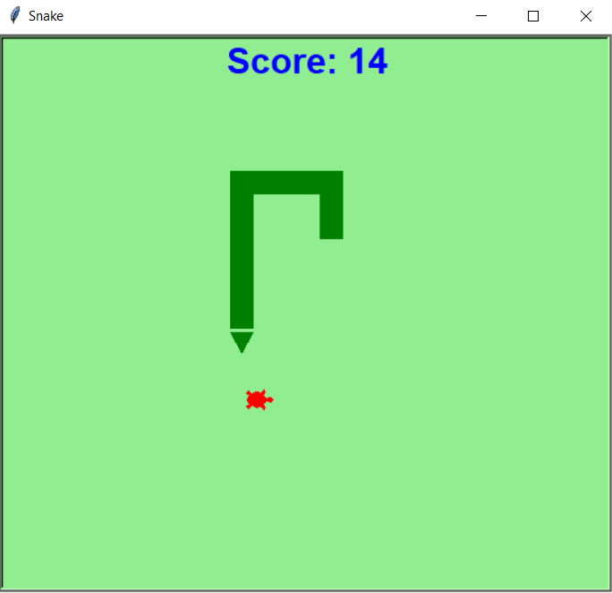

Home at Last
Portfolio
About Me
Here is my Portfolio Page!
Falling Apples

In this project, an apple tree and backdrop is drawn. The user is then asked to choose an amount, from one to six, and a size, small or large, for the apples. The program draws the apples, giving them a randomized color of red, gold, or yellow green. Afterwards, the user is given a prompt to start the apple drop, causing the apples to fall from the tree and bounce off the hill.
Tic Tac Toe

In this project, a game of Tic Tac Toe is played in the terminal and displayed on the screen. Player A controls X's and goes first, while player B controls O's and goes second. Player A inputs a number corresponding with the numbered square they want to mark with an X, and then Player B must input a different number to mark a square with an O. If a player gets a line of three and wins, the program will declare the winning player. If the board becomes full without a winner and ends in a tie, the program will declare that there has been a tie and no one wins. After a game is played, the players will be asked if they want to play again. If yes, the game will reset, allowing for another game to be played. If no, the program will end.
Snake

This project was an attempt to recreate the game of Snake in Python. Upon running, the program loads and displays the game with the snake head, a piece of food, and a score, waiting for an arrow key input to start the game. After receiving the input, the snake will continuously move forward, requiring the player to turn the snake as it moves using the arrow keys. The player will be able to increase their score by running into and eating the food. Afterwards, the snake's tail will grow and another food will appear in a random location on the screen. The game ends when the snake runs into the border of the screen.
Rock Paper Scissors
This project was made in Scratch and is a rendition of rock paper scissors. The goal of the game is to push the CPU opponent off the screen before they push the player off the screen. The player moves forward after winning a game of rock paper scissors, and is moved back after losing. The player selects their move by clicking on the sprite of their respective choice. When the player wins, the matches won score increases. After the game ends, the player will be asked if they wish to replay the game. If the player accepts, they will play the game again, and the background and opponent costume will change. If the player declines, the game ends. This game includes sound effects for many actions in the game.